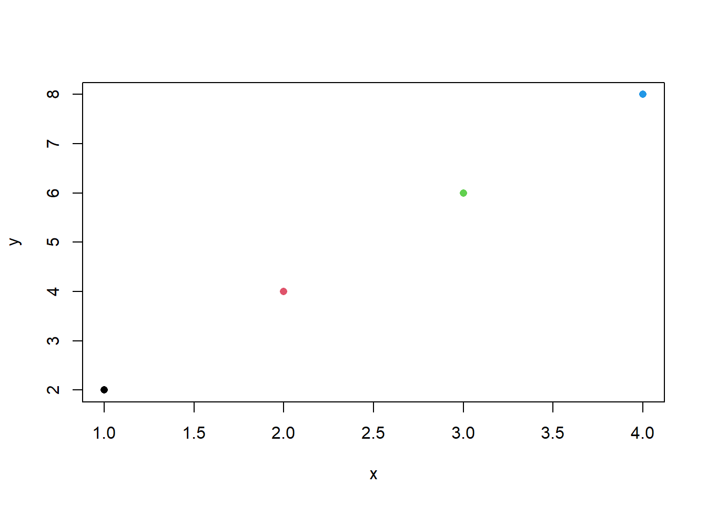
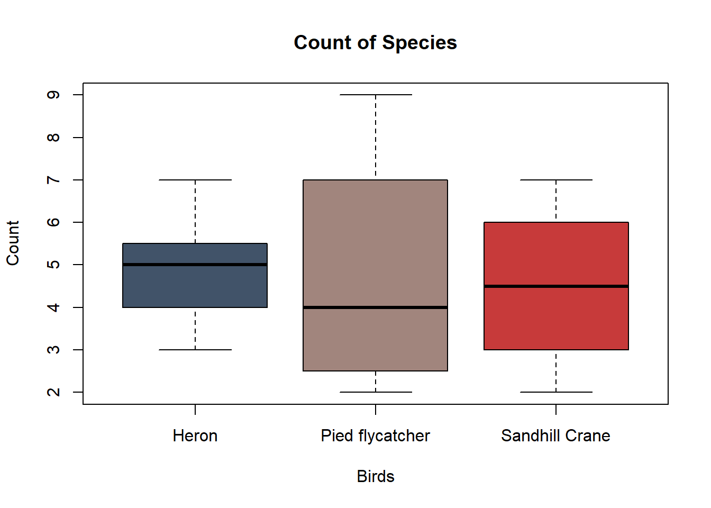

species <- "Emu"
Quantity <- 37L
average_height <- 1.65
species[1] "Emu"Question 1
Create a range vector from 4-12 and store it as X. Then:
Question 2
Using your own data, create a data frame of 5 different birds with the amount of worms they ate that day.
Question 3
Create the following vector:
Mallard, Kingfisher, Loon, Mallard, Mallard, Loon
Question 4
Create the following data frame:
| Species | Seeds_Eaten |
|---|---|
| House Sparrow | 18 |
| House Sparrow | 22 |
| House Sparrow | 20 |
| Greenfinch | 15 |
| Greenfinch | 17 |
| Greenfinch | 19 |
A syntax is essentially the set sequence that a function needs to follow in order to … function. When i introduce some functions i will try my best to give you an example of the naked syntax do tha you know what you need and could optionally include.
A Variable is a named location that will store a value or values. Think of it as a label attached to the data so you don’t have to keep typing numerical values each time.
In R, variables can be created using the assignment operator ‘<-’
species <- "Emu"
Quantity <- 37L
average_height <- 1.65
species[1] "Emu"You’ll notice that non-numerical data must be stored using speech marks (” … “)
Variables are CASE SENSITIVE !!!
You will return an error if even one letter is in a different case, which is why it’s more convenient to always work in lowercase.
You can also use Variables in calculations:
x <- 4
y <- 3
total <- x + y
total[1] 7Data types are the kind of information stored within a variable. Knowing what the data is, R can decide what to do with it.
Within this data, there are 3 different types of data:
species <- "Emu"
class(species)[1] "character"quantity <- 37L
class(quantity)[1] "integer"average_height <- 1.65
class(average_height)[1] "numeric"Character data stores text, and is defined by quotation marks. R will know that it cannot preform calculations with these values and instead makes searching your data for values a lot easier!
Numerical data is the default that R results to for numbers unless explicitly told to value a number as a integer. (Which is what the ‘L’ signifies)
Numerical Values are typically referred as values with decimals places and integers are whole numbers.
At this stage you wouldn’t need to worry about choosing between the two, unless you have a value that could NEVER be anything other than a whole number, such as number of students or number of survey responses etc.
Some functions may require integers to work or sometimes depending of the amount of data you have, it may be more proficient on your operating system to store items as integers.
Finally Logical Values are used to answer yes/no questions or whether certain conditions have been met.
age <- 22
age >= 30[1] FALSEA vector is one of the most fundamental data structures in R. It collects given values and stores them in an object. So instead of storing each value under separate names, you can store groups under 1 name.
Vectors are created using the c() function, which stands for combine.
For example we can create a numerical vector of scores on a test:
Scores <- c(80,37,45,98,67,87)Or a character vector of species we observed:
Species <- c("Blackbird", "Honeybee", "House Martin")Ranged vectors
Depending on your data, it may be easier for you to just create a range within your vector using a colon (:).
You can do this with Numerical values:
x <- c(1:6)
x[1] 1 2 3 4 5 6And even use it within colour functions when creating graphs:
x <- c(1,2,3,4)
y <- c(2,4,6,8)
plot(x,y,
pch = 16,
col = c(1:4)
)
rep()
This is a useful function that can be used alongside vectors to save you time when you have large amounts of data.
For example, lets say we have a 12 sided die and we wanted to store the die as a variable alongside the probability of which side it would land on. You could slowly write out 8.3333 12 times OR you can use this function:
faces <- c(1:12)
probabilities <- rep(1/12,12)
probabilities [1] 0.08333333 0.08333333 0.08333333 0.08333333 0.08333333 0.08333333
[7] 0.08333333 0.08333333 0.08333333 0.08333333 0.08333333 0.08333333faces [1] 1 2 3 4 5 6 7 8 9 10 11 12An operator is a symbol or a combination of symbols which tells R what specific task needs to be performed. They essentially streamline your calculations.
Arithmetic operators are used in mathematical calculations, very similar to how you would write a code in excel.
| Operator | Description | Example | Result |
|---|---|---|---|
+ |
Addition | 5 + 3 |
8 |
- |
Subtraction | 8 - 3 |
5 |
* |
Multiplication | 4 * 6 |
24 |
/ |
Division | 12 / 4 |
3 |
^ |
Raise to a power | 2 ^ 3 |
8 |
%% |
Modulus (remainder) | 10 %% 3 |
1 |
%/% |
Integer division | 10 %/% 3 |
3 |
This operator will return the remainder after division. For example
10%%3[1] 1This operator will IGNORE the remainder of divisions and only provide an integer result. For example:
10%/%3[1] 3This results in 3, because despite 10/3 = 3.33333, Integer Division will ignore the .33333 and return the integer value of 3
These operators act to retrieve specific data points from an data set / vector.
We will use the following vector as an example:
numbers <- c(10,20,30,40,50,60)Square Brackets are one of the more common extractor operators, They allow you to select one or more unit from a data frame, list or vector.
numbers[4][1] 40Selecting multiple specific units can be done by creating a vector within the square brackets
numbers[c(1,4)][1] 10 40Or if you require specific ranges of data within a dataset you can use a colon to produce a sequence:
numbers[1:4][1] 10 20 30 40This method can be done inversely too, lets say you wanted to retrieve a data set but exclude the Third value you can input:
numbers[-3][1] 10 20 40 50 60As you can see, you have returned the full sequence apart from the Third value.
Data frames are slightly different when it comes to extracting data. It uses positions within the brackets to locate data points
data[row,column]
We will use the following dataframe as an example:
animals <- data.frame(
species = c("Penguin","Zebra","Lemur","Giraffe"),
count = c(67,60,70,76)
)We can use the brackets to return individuals [x,y], all species [,y] or single species with corresponding counts [x,]
animals[1,1][1] "Penguin"animals[,1][1] "Penguin" "Zebra" "Lemur" "Giraffe"animals[3,] species count
3 Lemur 70When you have a large data frame (unlike the ones above), it becomes more efficient to use the $ operator. This acts as a locator for R; consider it translated as ‘inside’. For example:
animals <- data.frame(
species = c("Penguin","Shark","Lemur","Giraffe"),
count = c(67,60,70,76),
wearing_hats = c(33,4,5,60),
wearing_glasses = c(48,54,67,72),
wearing_shoes = c(50,0,57,5),
wearing_coats = c(20,30,40,50)
)
animals$wearing_shoes[1] 50 0 57 5This becomes exceptionally helpful when you want to plot graphs with only certain data points, instead of the whole data set.
These are your basic summary statistics, which describe the main features of a data set. They provide a quick overview of data, possibly helping you identify patterns or compare groups.
Throughout this section, we will use this data set:
counts <- c(30,26,38,37,48,16,28,47,25,37)| Statistic | R Function | What it Measures | Example Result |
|---|---|---|---|
| Minimum | min(counts) |
The smallest value in the dataset. | 16 |
| Maximum | max(counts) |
The largest value in the dataset. | 48 |
| Mean | mean(counts) |
The average of all values in the dataset. | 33.2 |
| Median | median(counts) |
The middle value when the data is ordered from smallest to largest. | 33.5 |
| Mode | table(counts)* |
The value that occurs most in the dataset. | 37 |
| Range | range(counts) |
Returns the minimum and maximum values in the dataset (or use max(counts) - min(counts) to calculate the numerical range). |
32 |
| Standard Deviation | sd(counts) |
Measures how spread out the values are around the mean. | 10.7 |
And of course, there is a way of producing these values at once instead of typing it all individually, just thought id make you read it all first :)
summary(counts) Min. 1st Qu. Median Mean 3rd Qu. Max.
16.00 26.50 33.50 33.20 37.75 48.00 Functions are the basis of R code; some unique Functions may have specific syntax, but most follow a simple structure. Make sure you include your round brackets, and Lines of code end in a comma (EXCEPT THE LAST!)
This section will explain and show examples of the basic functions you may need to understand
This function will count how many values are stored in a variable. It will not add the values together; instead, it tells you how many values there are. This is useful when you want to check the size of your data or troubleshoot.
x <- c(4,2,9,10,8)
length(x)[1] 5This function adds every numerical value in a vector and returns the total. As you can imagine, its useful for calculating totals.
x <- c(4,2,9,10,8)
sum(x)[1] 33This function arranges values into ascending order (smallest to largest). You could use it to make inspecting or identifying patterns easier.
x <- c(4,2,9,10,8)
sort(x)[1] 2 4 8 9 10This function will round numerical values to a chosen number of decimal places. This is useful when too many decimal places make data visualisations or reports crowded or messy. The syntax for this function is as follows: “round(DATA NAME, NUMBER OF DECIMAL PLACES)”
x <- 3.28663256
round(x,1)[1] 3.3round(x,2)[1] 3.29round(x,3)[1] 3.287This function will generate a sequence of evenly spaced numbers. You can choose where the sequence starts and ends alongside the intervals it increases. It can be very useful when editing X and Y axis on graphs. The syntax for this function is as follows: “seq(START NUMBER, END NUMBER, by = INTERVAL NUMBER)”
seq(0,100, by = 5) [1] 0 5 10 15 20 25 30 35 40 45 50 55 60 65 70 75 80 85 90
[20] 95 100This function randomly selects values from a vector. Its incredibly useful for random sampling or simulations. If you wanted independent samples (values can be selected more than once) you can use “replace = TRUE”, otherwise set it to “FALSE” The syntax for this function is as follows : “sample(DATA NAME, AMOUNT OF SAMPLES, replace”TRUE OR FALSE”).
Flips <- c("Heads", "Tails")
sample(Flips, 10, replace = TRUE) [1] "Heads" "Heads" "Tails" "Heads" "Tails" "Tails" "Heads" "Heads" "Tails"
[10] "Tails"This may be one of the most important functions. This will create a data frame, which is the standard way of storing data in rows and columns within R. Most statistical analyses you do could potentially involve one of these. The syntax of this function is as follows: “data.frame(COLUMN 1 NAME = c(VALUES), COLUMN 2 NAME = c(VALUES))”
data.frame(
Name = c("Jeremy", "Nam"),
Score = c(10,12)
) Name Score
1 Jeremy 10
2 Nam 12These 3 functions are very useful when you need to troubleshoot or check that you have imported data correctly.
results <- data.frame(
Name = c("Jeremy", "Nam"),
Score = c(10,12)
)
head(results) Name Score
1 Jeremy 10
2 Nam 12names(results)[1] "Name" "Score"str(results)'data.frame': 2 obs. of 2 variables:
$ Name : chr "Jeremy" "Nam"
$ Score: num 10 12This function will count the number of UNIQUE values within a variable. Its useful for summarizing categorical data.
Z <- c("A","A","B","C","B","C","A","B","C","A","D")
table(Z)Z
A B C D
4 3 3 1 This function is similar to table(), in the way that it will read a vector of data and tell you what it stores. In this case, it returns the unique values without giving the counts. Potentially useful when you first inspect a data set.
Z <- c("A","A","B","C","B","C","A","B","C","A","D")
unique(Z)[1] "A" "B" "C" "D"This is another incredibly important function but can be slightly tricky to understand. Essentially, the factor() function tells R that that values within a group represent different categories. You would want to use this to represent a variable as a category rather than a label to a numerical value, or even a form of measurement. Each of these categories are referred as levels, which you can view by using “levels()”.
As you can see below we can create non repetitive categories from a vector, from which we can assign values to and form a plot from, and because you created the categories, the data is grouped instead of having 12 different plots for herons.
birds <- c("Sandhill Crane", "Heron", "Pied flycatcher", "Heron", "Heron","Sandhill Crane", "Heron", "Pied flycatcher", "Heron", "Heron","Sandhill Crane", "Heron", "Pied flycatcher", "Heron", "Heron","Sandhill Crane", "Heron", "Pied flycatcher", "Heron", "Heron")
birds <- factor(birds)
Count <- c(4,4,9,3,6,7,7,3,5,5,5,4,2,5,5,2,4,5,6,4)
# See Chapter 3 to learn how to make graphs!
boxplot(Count ~ birds,
col = c("#415369","#A1857D","#C73A3A"),
xlab = "Birds",
main = "Count of Species"
) 
Once again, another vital function. This function will allow you to group data according to a singular value/name and then perform another function to each group independently. This function is typically used with data frames. For example if we calculate the mean of values within a data frame we get 1 value for ALL groups. So by applying ‘aggregate()’ we can separate the categories within a data frame and produce individual values for sum, mean etc.
The syntax for this function is as follows : aggregate(NUMERICAL VALUE ~ CATEGORICAL/CHARACTER DATA, data = NAME OF DATA FRAME, FUNCTION TO APPLY)
Scoreboard <- data.frame(
Name = c("Jeremy", "Nam","Jeremy", "Nam","Jeremy", "Nam"),
Points = c(11,5,37,24,13,27)
)
Scoreboard #This is how the data frame looks before we apply aggregate() Name Points
1 Jeremy 11
2 Nam 5
3 Jeremy 37
4 Nam 24
5 Jeremy 13
6 Nam 27aggregate(Points ~ Name,
data = Scoreboard,
sum
) Name Points
1 Jeremy 61
2 Nam 56This function works exactly the same as ‘aggregate()’, however is better suit (more convenient) for vectors. The syntax for this function is as follows: “tapply(NUMERICAL DATA NAME, CATEGORICAL DATA NAME, FUNCTION TO APPLY”
Points <- c(11,5,37,24,13,27)
Name <- c("Jeremy", "Nam","Jeremy", "Nam","Jeremy", "Nam")
tapply(Points, Name,
sum
)Jeremy Nam
61 56